地政学
ビサウは西アフリカの小国を大西洋へ開く首都です。港、政府機関、軍、外交団が近く、海洋監視や周辺国との移動が街の緊張になります。ラジオとSNSの噂、港の待ち時間、周辺国からの商人も政治の温度を変えます。今も。
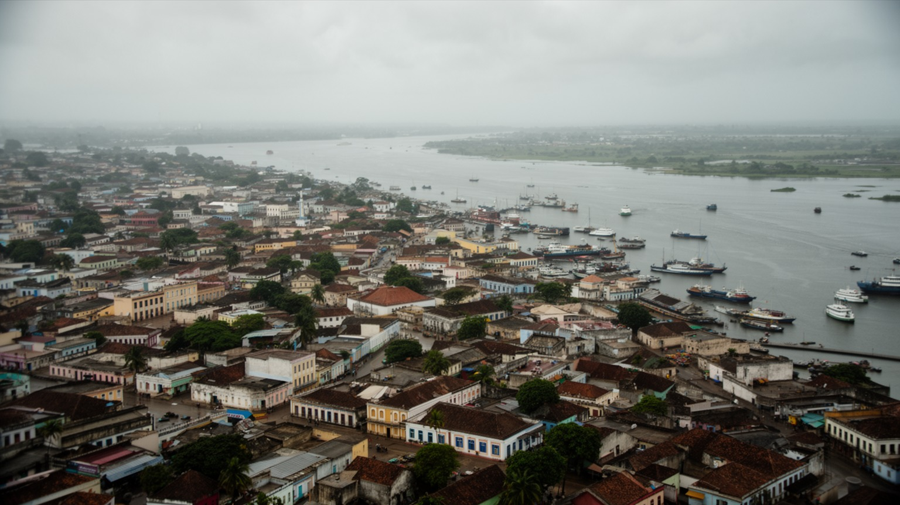
🇬🇼 ギニアビサウ共和国 / 首都 / World City Atlas
ゲバ川河口に広がる小さな首都です。港、行政、カシューナッツ交易、独立運動の記憶、クレオールの会話、イスラムとキリスト教、雨季の水害、ビジャゴス諸島への旅が一つの都市を形作ります。
都市の骨格
ビサウは巨大都市ではありませんが、国の人口、行政、港湾、大学、市場、外交機能が強く集まる首都です。ゲバ川の河口、低い湿地、植民地期の街路、郊外住宅地、島へ向かう船着き場が、国の縮図を作っています。
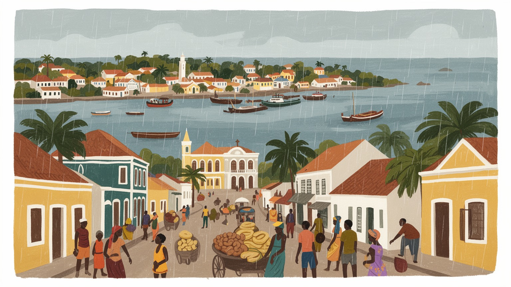
ビサウは西アフリカの小国を大西洋へ開く首都です。港、政府機関、軍、外交団が近く、海洋監視や周辺国との移動が街の緊張になります。ラジオとSNSの噂、港の待ち時間、周辺国からの商人も政治の温度を変えます。今も。
港湾、行政、市場、建設、教育、輸送、路上商いが雇用を支え、カシューナッツ輸出が都市経済に直結します。若者は技能、賃金、停電、物価に揺れ、屋台、配達、夜の音楽、島へ向かう船の仕事も家計に響きます。日々。
ビサウではポルトガル語、クレオール、民族語が混ざり、イスラム、キリスト教、伝統信仰が近く暮らします。音楽、祝祭、親族、市場の食と会話、夜の太鼓、サッカー中継が港町の声を作ります。祈りも近いです。街中で。
住民は雨季の冠水、電力、水、交通、学校、医療、家賃を日々調整します。子どもや高齢者の移動も課題で、旅行者は旧市街、要塞、市場、港、島への船、魚の匂い、夕方の買い物から生活の近さを見ます。路地でも。
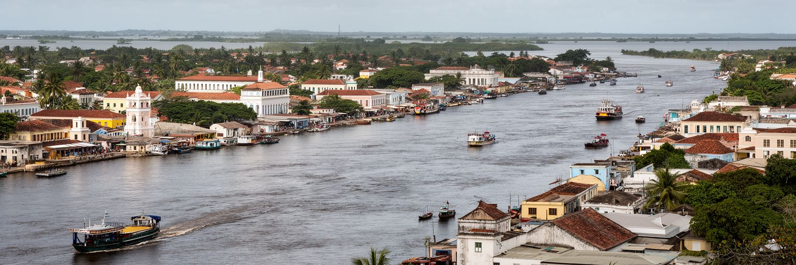
ビサウを理解する入口は、海に面した都市でありながら、ゲバ川河口の低い地形に支えられていることです。港は大西洋へ開き、川は内陸の農村、湿地、マングローブ、道路網と首都を結びます。地図で見ると小さな市域ですが、政府機関、港湾、軍、大学、病院、市場、外交機能が集まり、国の政治と物流の多くがここを通ります。低地の都市であるため、雨季の強い雨、排水、道路のぬかるみ、沿岸の浸水は、住民の移動と商売を直接左右します。河口は交易と生活を助ける一方、都市の成長に制約も与えます。旧市街の街路、船着き場、港周辺の倉庫、郊外へ広がる住宅地を一緒に見ると、ビサウは海と川の間で国をまとめる小さな操作盤のように見えてきます。地方の農産物、輸入品、行政手続き、海外へ向かう若者、島へ渡る旅行者が、同じ河口の動線に集まります。首都の重要性は高層ビルの数ではなく、国の移動と意思決定がどれだけここに集中しているかにあります。河口の近さは、漁業、渡船、港湾、排水、都市の眺めを同時に決めます。ビサウでは、政治の中心と水辺の生活が離れておらず、国家の弱さも住民の工夫も同じ低い街路に現れます。潮の満ち引き、雨水、港の門、市場へ向かう道は、都市を読むための実用的な手がかりです。水辺をどう守り、どう使うかが、首都の将来を左右します。日々問われます。
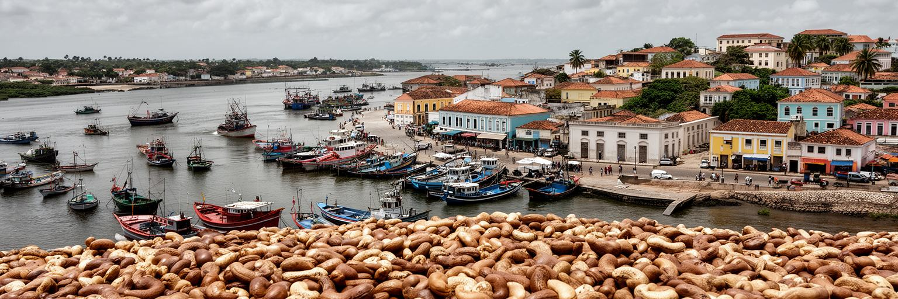
ビサウの港湾経済は、単に船とコンテナの話ではありません。ギニアビサウの重要な輸出品であるカシューナッツは、地方の農家、仲買人、道路輸送、倉庫、輸出業者、港湾労働者、通関手続きによって首都へ集まります。収穫期には農村の所得、国家の外貨、商人の信用、港の混雑が一つにつながり、世界市場の価格がビサウの家計にも響きます。港は輸入燃料、米、小麦粉、建材、薬品、日用品を受け入れる入口でもあり、食堂の鍋や小売店の棚は岸壁の効率に依存しています。けれども、港湾収入がそのまま広い雇用や生活改善へ変わるわけではありません。多くの仕事は季節性があり、非公式な取引、荷運び、屋台、日雇い労働も多く、停電、道路の傷み、通関の遅れ、政治の不安定さが企業と労働者の負担になります。ビサウの港を読むことは、輸出額だけを見ることではなく、農村から届いた袋を誰が運び、誰が保管し、誰が価格リスクを負い、誰の子どもの学費になるのかを見ることです。昼の暑さの中で袋を積む若者、夜に港近くで食事を出す女性、ラジオで相場を聞く商人まで含めて、カシューナッツは生活の糸になります。港の整備が進むほど、地元の加工、技能訓練、透明な税収、道路修理へ利益を広げられるかが重要になります。加工が国内に残れば、若者の仕事と農家の交渉力も少しずつ変わります。
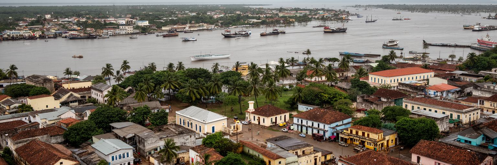
ビサウは、ポルトガル植民地支配、独立戦争、解放運動、軍と政党の緊張を都市空間に残す首都です。アミルカル・カブラルの名は、国の独立だけでなく、教育、農村、文化、自立をめぐる思想として記憶されています。政府庁舎、広場、記念碑、旧植民地期の建物、軍関連施設は、国家が作られてきた過程を静かに示します。一方で、独立後のギニアビサウはクーデター、政治対立、軍の介入、選挙をめぐる混乱を繰り返してきました。首都ではその不安定さが、警備、行政サービスの停滞、投資の鈍さ、若者の不信、報道の緊張として現れます。政治が揺れると、道路修理、学校、電力、港の管理、医療の改善も遅れます。ビサウを政治から読む時、制度の名前だけでなく、市民が役所で待つ時間、給料の支払い、抗議の場所、軍施設の存在、新聞やラジオの声を見なければなりません。独立の記憶は誇りであると同時に、国家が約束した生活改善をどこまで果たせるかという問いでもあります。首都は国の象徴ですが、象徴であるほど失望も集まります。ビサウの広場や官庁街には、解放の理想と日常行政の難しさが重なっています。安定した制度が育てば、港湾収入や国際支援を公共サービスへつなげやすくなります。政治の信頼は、首都の街路を安心して歩ける感覚にも表れます。透明な選挙、独立した司法、軍の統制は、遠い制度論ではなく住民の仕事と安全に結びつきます。
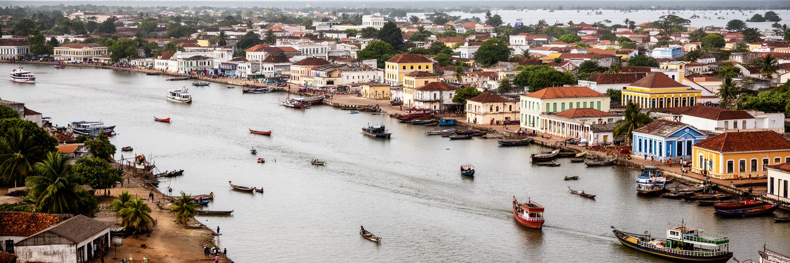
ビサウの文化的な厚みは、言語の重なりにあります。公的にはポルトガル語が使われますが、日常の多くではギニアビサウ・クレオールが人びとを結び、バランタ、フラ、マンディンカ、マンジャコ、パペルなど多様な民族語も家庭や地域で生きています。市場の交渉、乗合交通、学校の休み時間、サッカーの応援、音楽、政治の会話では、言葉が一つに固定されず、相手に合わせて切り替わります。この多言語性は、国家の統一を支える力であると同時に、教育や行政で誰が十分に理解できるかという課題も生みます。ポルトガル語で作られた制度が、クレオールや民族語で暮らす住民に届くには、翻訳だけでなく、信頼できる窓口と説明が必要です。ラジオ番組、携帯電話の音声メッセージ、SNSの短い投稿は、言語の壁を越えて政治や暮らしを語る場になります。ビサウの街角では、独立運動の記憶、アフリカ大陸のリズム、ポルトガル語圏とのつながり、近隣国との移動が混ざり、首都らしい混成文化を作ります。クレオール都市としてのビサウを読むことは、植民地語と生活語の間で人びとがどう交渉し、笑い、怒り、商売し、学ぶのかを見ることです。学校で学ぶ言葉、家庭で叱られる言葉、市場で値段を決める言葉が違う時、都市生活には柔軟さと負担が同時に生まれます。夕方の路地で聞こえる笑い声や音楽まで、ビサウの声は重なりの中にあります。
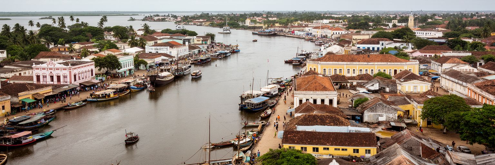
ビサウでは、イスラム、キリスト教、伝統信仰が都市の日常の中で近くにあります。金曜礼拝、日曜礼拝、結婚、葬儀、命名、断食月、祝祭、親族への贈り物は、単なる宗教行事ではなく、生活の安全網を確かめる時間です。市場での信用、病気の時の支援、地方から来た親族の滞在、若者の仕事探しは、しばしば宗教施設や家族のつながりを通じて動きます。信仰は都市を分断するだけのものではなく、多くの場合、異なる背景の人が互いの暦を知り、近所で距離を調整する方法にもなります。ただし、都市の貧困、失業、政治的不信が深まると、共同体への負担は増えます。家族や宗教施設が何でも支えられるわけではなく、医療、教育、住宅、雇用の制度が弱いほど、個人の困難は親族の義務として押し戻されます。ビサウを宗教から読むには、モスクや教会の建物だけでなく、礼拝後の会話、葬儀費用の集め方、祝祭前の市場、近所の子どもを見守る関係まで見る必要があります。信仰は都市の倫理を作り、同時に国家サービスの不足を補う場にもなっています。祈りの時間が通りの動きを整え、祝祭が市場の価格を変え、親族の集まりが遠い村と首都を結びます。宗教と共同体は、ビサウで人が孤立しすぎないための実用的な仕組みでもあります。異なる信仰が近くに暮らす経験は、政治が揺れる時にも地域の対話を保つ基盤になります。共同体の力を制度が支えることが大切です。
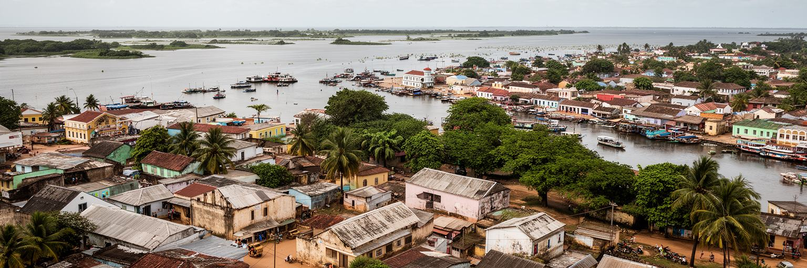
ビサウの暮らしでは、住宅、電力、水、排水、道路の状態が生活の質を大きく左右します。中心部には行政、商業、古い建物が集まりますが、人口増加に伴って郊外の住宅地も広がり、未舗装道路や不十分な排水が残る地区があります。雨季には冠水や泥、蚊、交通の遅れが起こり、乾季にはほこりと暑さが生活を疲れさせます。電力が不安定であれば、冷蔵、学習、商店の営業、病院の設備、携帯電話の充電まで影響を受けます。水道や井戸の利用が限られる家庭では、水の購入、貯水、運搬が女性や子どもの時間を奪うこともあります。住宅の問題は、建物の広さだけではありません。学校や市場へ行ける距離、夜に歩ける道、街灯、排水溝の有無、洪水時に避難できる場所、家賃を払える収入が重要です。高齢者はぬかるんだ道や暗い路地で移動を控え、子どもは雨上がりの水たまりを避けながら通学します。国際支援や公共投資が入っても、維持管理が続かなければ生活はすぐに不安定になります。ビサウの都市成長を考える時、港や官庁だけでなく、毎朝水を確保し、停電に合わせて商売を調整する住民の時間を中心に置く必要があります。蛇口、電線、排水路、舗装が機能する時、市民は国家を身近に感じます。住宅政策は貧困対策であり、災害対策でもあります。家の前の道が乾くかどうかが、通学、通院、買い物、夜の帰宅を決めます。
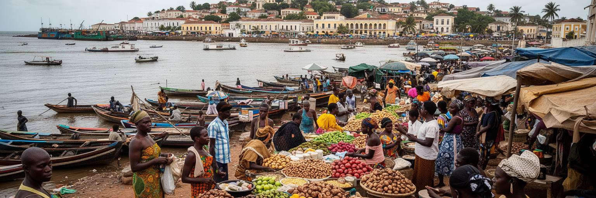
ビサウの市場は、都市の台所であり、情報の交差点でもあります。米、魚、野菜、果物、カシューナッツ、パーム油、衣料、携帯用品、輸入食料が並び、地方の農村、沿岸の漁業、港の輸入、近隣国との商流が一つの場所で見えます。市場で働く女性商人、荷運び、露店、食堂、両替、乗合車の運転手は、公式統計に出にくい都市経済を支えています。食は生活の基本ですが、輸入米や燃料価格、為替、港の遅れ、雨季の道路状況が価格に影響します。収入が不安定な家庭では、食費の小さな上昇が学校費や医療費を圧迫します。ビサウ料理には、米、魚、ピーナッツ、野菜、唐辛子、沿岸と内陸の素材が混ざり、家庭の味と街の食堂が都市の記憶を作ります。焼けた魚の匂い、唐辛子の辛さ、米袋の乾いた音、携帯で送られる仕入れ連絡が、買い物の感覚を形作ります。市場は観光客にとって色彩豊かな場所ですが、住民にとっては信用で買い、少量ずつ売り、親族の用事を聞き、政治の噂を交わす実用の空間です。学校帰りの子どもは軽食を買い、高齢者は顔なじみの店で値段を確かめます。混雑や衛生には改善余地がありますが、屋根、排水、保管、冷蔵、交通整理を改善できれば、食の安全と商人の収入は大きく変わります。市場は貧しさの象徴ではなく、都市を動かす知恵が集まる場所です。値段交渉の声、魚を運ぶ人、米袋を積む車が、首都の経済を毎朝作り直します。
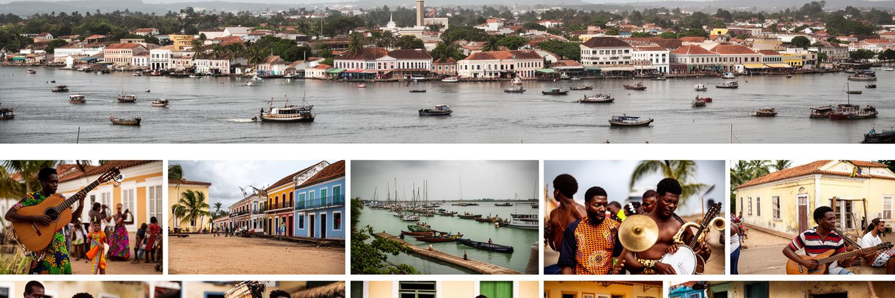
ビサウの文化を語る時、音楽とラジオの存在は欠かせません。グンベをはじめとする音楽は、民族のリズム、ポルトガル語圏の影響、クレオールの言葉、独立運動の記憶、日常の喜びと批判を混ぜながら、都市の声を作ってきました。歌は娯楽であるだけでなく、政治への皮肉、移民の寂しさ、恋愛、貧困、共同体の誇りを伝える媒体です。電力や通信が不安定な環境でも、ラジオ、携帯電話、SNS、結婚式、路上の音響、地域の集まりを通じて音楽は広がります。夜になると、発電機の低い音、食堂の匂い、タクシーのラジオ、路地の笑い声が重なり、昼の行政都市とは別の表情が出ます。若者にとって音楽は、仕事の少なさや政治への不信を越えて、自分の言葉で都市を語る方法にもなります。けれども、録音環境、著作権、収入、演奏場所、機材、移動費は大きな課題になっています。文化は貧しい国の飾りではなく、社会が自分を理解し、記憶し、批判する手段です。ビサウの音楽を聞くと、港の労働、地方から来た若者、独立の英雄、政治の失望、家族の祝祭が同じリズムに乗ります。都市を歩く時、建物だけでなく、窓から聞こえる歌、市場の呼び声を聞くことで、ビサウの内側が見えてきます。文化政策が演奏場所や教育を支えれば、音楽は若者の技能と観光の魅力にもなります。小さな録音室や結婚式の演奏も、首都の文化産業を支える働きです。音が残れば、政治の混乱を越えて記憶も残ります。
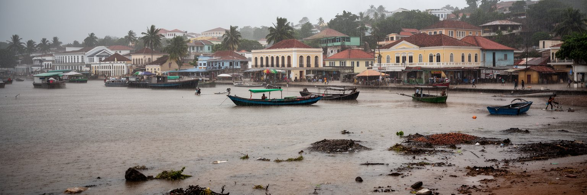
ビサウの気候は、雨季と乾季の差が大きく、都市の生活リズムを強く動かします。雨季には短時間の強い雨が道路を冠水させ、未舗装の道、排水不足、低地の住宅、学校への通学、港への貨物移動に影響します。水たまりは蚊や衛生問題を増やし、診療所や家庭に負担をかけます。乾季には暑さ、ほこり、水の確保が課題になり、屋外で働く人や市場の商人、高齢者、子どもは気候の影響を受けやすいです。気候変動によって降雨の極端化、海面上昇、高潮、沿岸侵食が進めば、河口にあるビサウの脆弱性はさらに高まります。気候対策は将来の抽象的な話ではありません。排水路を掃除し、道路を高くし、住宅を安全な場所に誘導し、マングローブや湿地を守り、住民へ早く情報を伝えることが、毎日の通学と商売を守ります。貧しい世帯ほど危険な土地に住みやすく、修理費や避難費を出しにくいため、災害は不平等を拡大します。ビサウを気候から読むことは、水辺の美しさだけでなく、雨が降った時に誰の家が浸かり、誰が仕事へ行けず、誰が病気になるのかを見ることです。都市の強さは、雨季の弱い時間に試されます。公共投資が小さくても、排水、廃棄物収集、避難路、学校周辺の安全を着実に整えることで被害は減ります。気候への備えは、首都の尊厳を守る基本です。地域で排水溝を詰まらせない習慣を作り、危険な場所を共有することも実用的な防災になります。
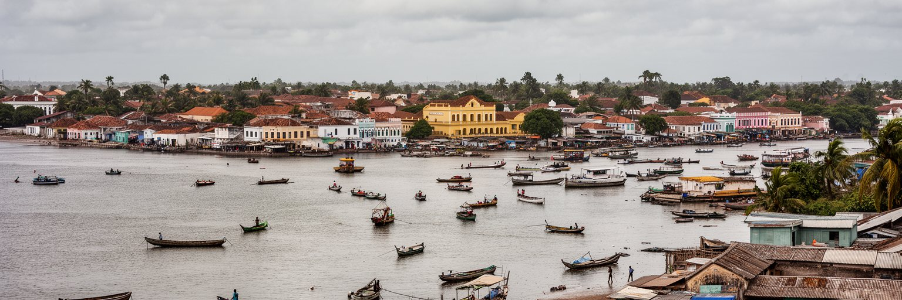
ビサウは、ビジャゴス諸島へ向かう旅の玄関口でもあります。島々はマングローブ、砂浜、漁業、聖地、伝統社会、生物多様性で知られ、首都の港や旅行会社、船、許可、燃料、宿泊がその訪問を支えます。観光客にとっては静かな自然と文化に出会う入口ですが、島の住民にとって海は生活、信仰、漁業、移動、医療への道です。観光が増えるほど、収入機会は広がりますが、環境負荷、土地利用、文化の商品化、廃棄物、船の安全、地域への還元が問われます。ビサウ市内で準備される旅は、首都の市場、港湾、燃料価格、ガイドの技能、天候情報に依存しています。島へ行く前にビサウを歩くと、国の自然資源と都市の貧困、国際的な保全の言葉と住民の日々の収入が近いことが分かります。ビジャゴス諸島は首都から離れた楽園としてだけ見るべきではありません。島の価値を守るには、ビサウ側の観光業者、行政、港の安全、教育、保健、廃棄物処理も整える必要があります。首都は島々の玄関であると同時に、観光収入をどう公平に分けるかを決める場所です。ビサウから出る船は、自然景観への期待と、沿岸社会の責任を同時に運んでいます。旅の質は、島に残る利益と文化への敬意で測られます。首都での案内が丁寧であるほど、島の自然と暮らしを壊さない観光につながります。船の安全、天候判断、廃棄物の持ち帰りを徹底できれば、旅は地域の誇りにもなります。
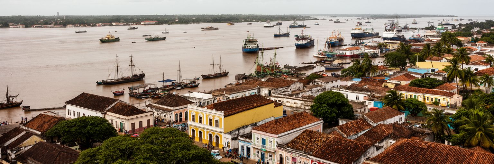
ビサウは、世界的な金融都市でも、巨大な観光都市でもありません。それでも、ギニアビサウという国を読むためには欠かせない首都です。ゲバ川河口の港は農村のカシューナッツと輸入品を扱い、官庁街は独立の理想と政治の不安定さを背負い、市場は食と非公式経済を支え、クレオールの会話は多民族社会を結びます。宗教と親族は生活の安全網になり、音楽は政治と暮らしの記憶を運び、住宅地では水、電力、排水、雨季の冠水が毎日の問題になります。ビジャゴス諸島への旅は、首都が国の自然と外の世界をつなぐ入口であることを示します。ビサウの重要性は規模ではなく、港、国家、農村、島、移民、文化、気候リスクが狭い空間に集まっている点にあります。都市の魅力を語る時、旧市街や川の眺めだけでなく、停電に合わせて商売を続ける店、雨の後に道を直す住民、家族を支える市場の女性、若者が歌で不満を表す姿まで見る必要があります。ビサウは弱さを抱える都市ですが、その弱さの中に国の再建へ向かう現実的な手がかりがあります。港の収入を生活基盤へつなぎ、政治の信頼を取り戻し、気候に強い住宅と道路を整えられるかが、次の都市の方向を決めます。小さな首都を丁寧に読むことは、西アフリカの沿岸都市が直面する課題を読むことでもあります。規模の小ささは、問題を小さくするわけではありません。むしろ国家の希望と負担が見えやすい都市です。